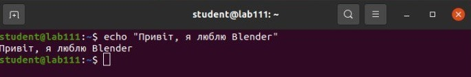
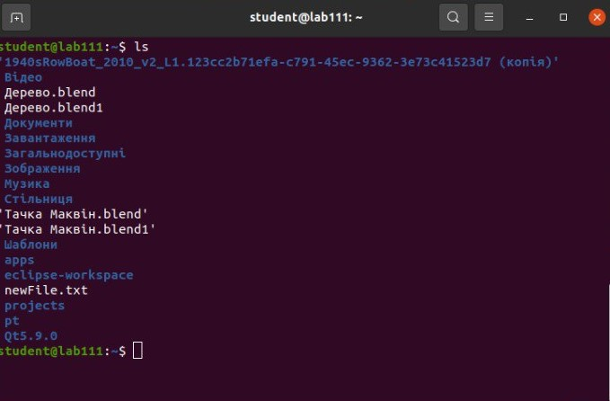
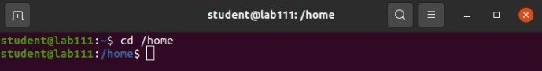
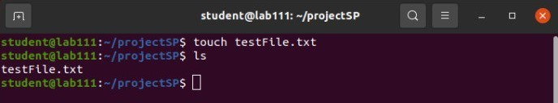
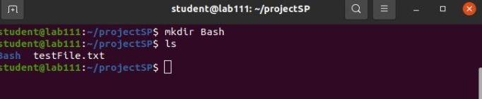
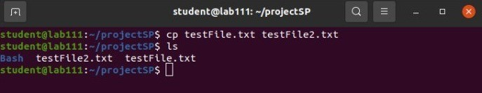
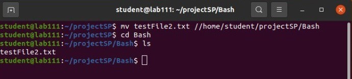
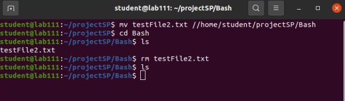
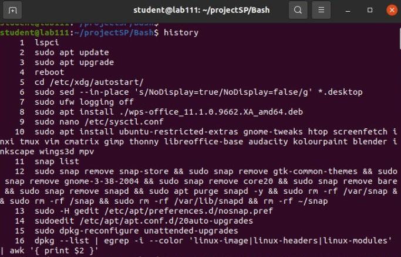

Коротка інформація про ОС GNU/Linux
GNU/Linux – це операційних систем, які працюють на базі ядра Linux, яке розроблене Лінусом Торвальдсом.
Головна фішка цих ОС - це відкритий код, що дозволяє будь кому змінювати операційну систему під себе. Такі ОС краще оптимізовані і не містьть зайвих вбудованих програм напротивагу Windows
Перелік найбільш популярних дистрибутивів;
- Ubuntu
- Fedora
- Mint
- Arch
- Kali
Приклади команд роботи в Linux CLI
pwd — створює новий Git-репозиторій у поточній папці.
echo — показує стан файлів у репозиторії.

ls — додає файл у «стейджинг» (підготовка до коміту).

cd — додає всі зміни у поточній папці.

touch — зберігає зміни у локальному репозиторії.

mkdir — показує історію комітів.

cp — створює нову гілку або показує список гілок.

mv — перемикається на іншу гілку.

rm — об’єднує обрану гілку з поточною.

history — надсилає зміни на віддалений репозиторій або отримує останні зміни.

Bash скрипт
Повернутись на головну